A conversational budgeting app for young professionals who find money apps cold and overwhelming.
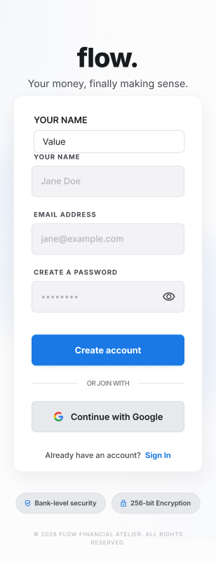
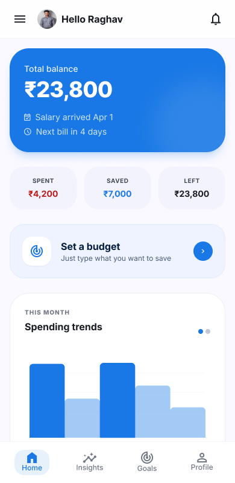
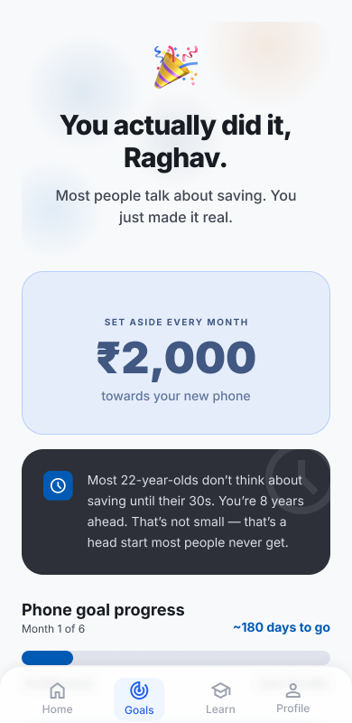
Most budgeting apps greet you with blank dashboards and spreadsheet-style inputs — built for someone who already knows how to budget. For a 24-year-old getting their first salary, they feel immediately alienating.
How might we make personal finance feel like a conversation with a financially savvy friend, rather than a form you're filing with a bank?
Young professionals, 22–30. They have income but no system — stuck between "I'll sort it out later" and real financial anxiety.
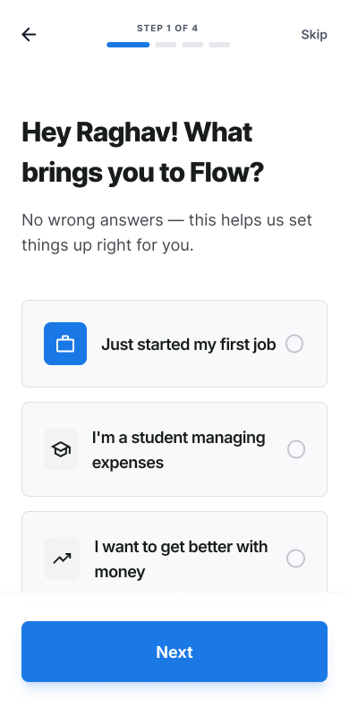
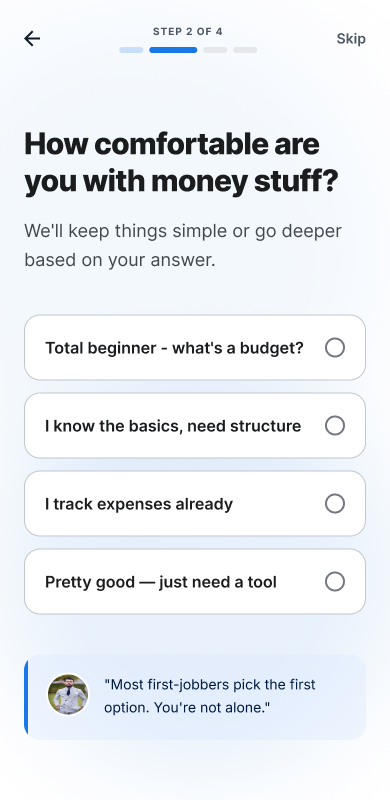
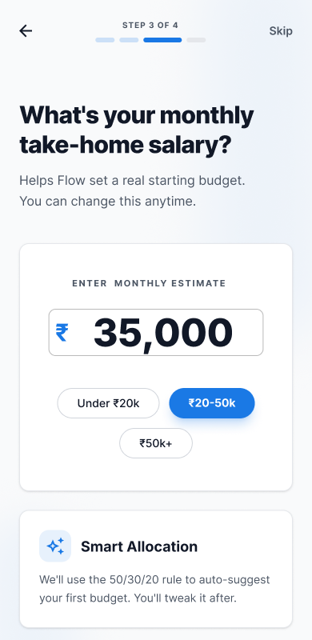
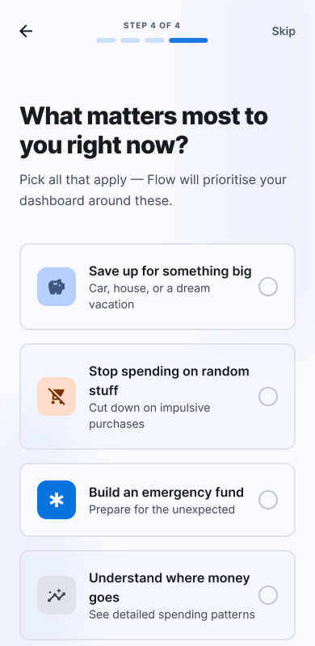
Instead of showing a lone balance, Flow shows ₹23,800 alongside when salary arrived, what's already spent, saved, and left — plus a spending trend chart. The user understands their situation at a glance without doing math.
No categories. No spreadsheets. The user types what they want to save in plain English — Flow understands, analyses, and builds the budget automatically.
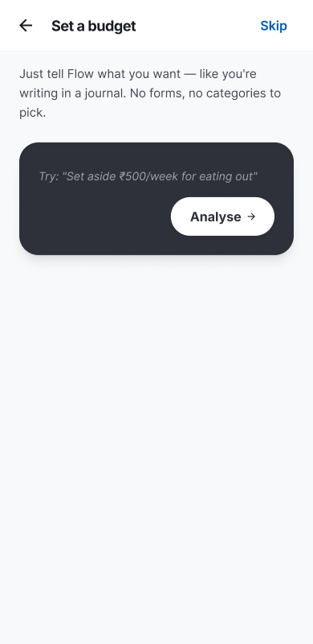
After onboarding, Flow opens a natural language input. No dropdowns, no forms — just a text field that says exactly what to do.
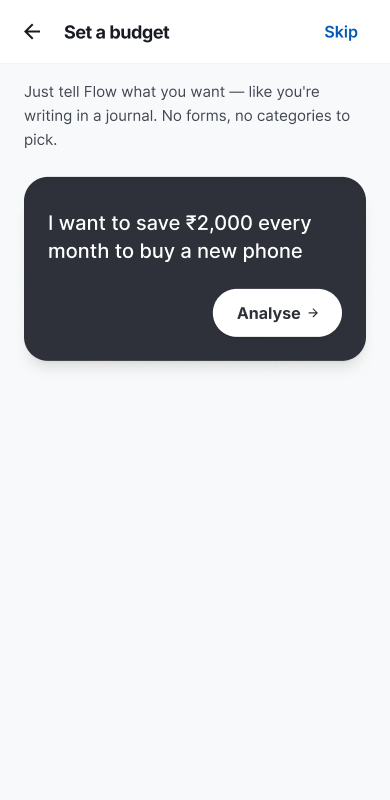
"I want to save ₹2,000 every month to buy a new phone." One sentence. No financial jargon required. Then tap Analyse →
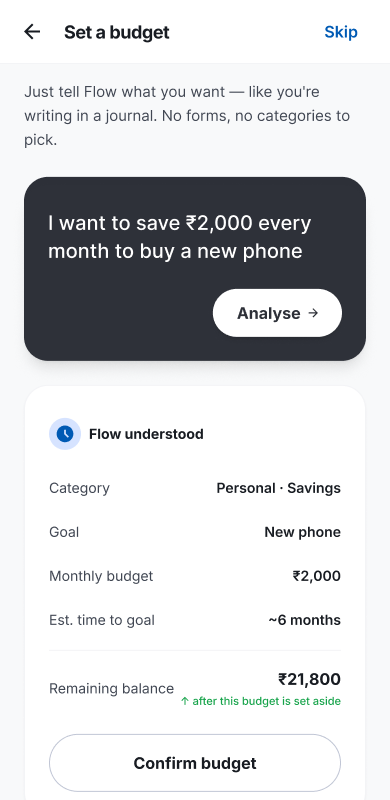
Flow parses the intent and surfaces: category, goal name, monthly budget, estimated time, and remaining balance — then asks to confirm.
Why conversational input? Traditional budgeting apps force users to think in categories first. Flow flips it — you start with your goal, and the structure follows. This removes the blank-page anxiety that causes most users to skip budgeting entirely.
"You actually did it, Raghav." When a user sets their first goal, Flow celebrates it like it matters — because for someone who's never budgeted before, it does. The screen shows ₹2,000/month toward a new phone and reminds them they're 8 years ahead of most 22-year-olds.
First-time budgeters don't know what they don't know. Flow includes lightweight financial literacy screens that explain concepts in plain language — embedded in the flow, not locked behind a help section.
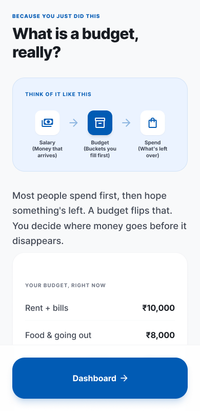
Generated initial concept: conversational onboarding, the name "Flow," overall tone.
Reviewed every screen. Kept what served the user, cut what felt forced or generic.
Sharpened copy, tightened hierarchy on the dashboard, refined the screen progression.
Color tokens, type scale, components — built for consistency across light and dark themes.
AI gave direction, I made decisions. Google Stitch didn't design Flow — it gave me a starting point. Every screen I kept went through my own lens: does this serve the user? Is this tone right?
What I'd do differently: user research before touching Figma. I made assumptions about what "feeling overwhelmed by money" means — I'd want to validate that with 5–8 interviews first.
What I'm proudest of: the onboarding flow. Getting the tone warm without feeling patronizing took real iteration — and I think it landed.
Want to see the full file?